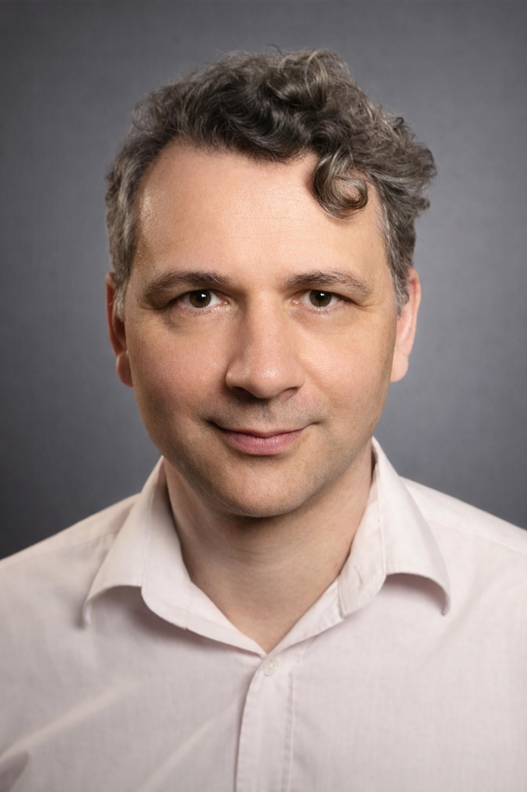
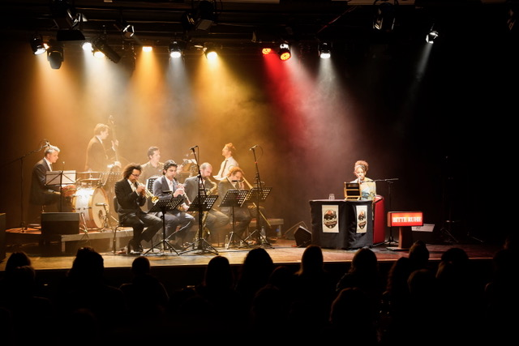
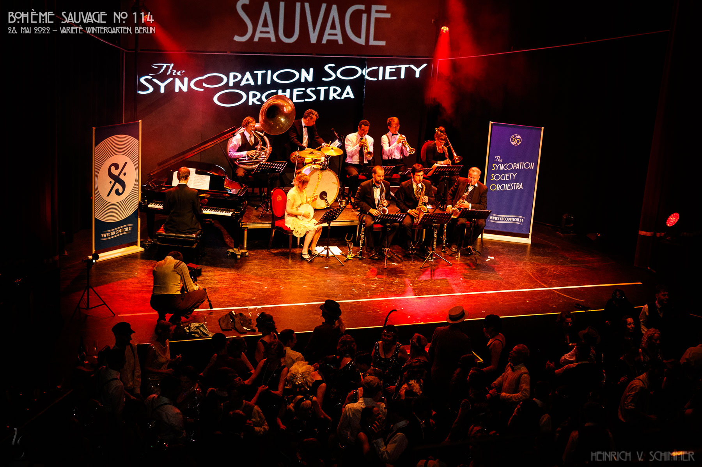

Kulturprojektentwicklung & Projektmanagement
Konzeptentwicklung, strategische Positionierung, Förderstrukturen, Partnerkoordination und langfristige Projektplanung.
François Perdriau
Kulturunternehmer · Autor · Produzent · Musiker
Entwicklung von Kulturprojekten, europäischen Kooperationsprogrammen, Bildungsinitiativen und künstlerischen Produktionen in Europa.
Berlin, Deutschland

Profil
François Perdriau ist ein in Berlin ansässiger Kulturprojektentwickler, künstlerischer Leiter, Produzent und Musiker mit Schwerpunkt auf Kulturprojektmanagement, europäischen Kooperationsprogrammen, kultureller Bildung und Jazz-Kulturerbe.
Mit Initiativen wie Syncopation Society, Are You Syncopated?!, Swinging Europe Network, Backbeat Jazz Academy, Lilly & Elisabeth und The Jungle Jazz Band entwickelt er Projekte, die Künstler, Institutionen, Publikum und Bildungspartner in Europa miteinander verbinden.

Gestaltung internationaler künstlerischer Begegnungen, kultureller Bildung und europäischer Kooperationsprojekte.
Kennzahlen
Arbeitsfelder
Konzeptentwicklung, strategische Positionierung, Förderstrukturen, Partnerkoordination und langfristige Projektplanung.
Entwicklung kohärenter künstlerischer Formate, Leitung kreativer Teams und Gestaltung von Projekten mit einer klaren kulturellen Identität.
Aufbau von Netzwerken zwischen Künstlern, Festivals, Institutionen und Bildungsorganisationen über Landesgrenzen hinweg.
Entwicklung von Bildungsformaten, die Musik, Geschichte, Erzählung und gesellschaftlichen Dialog miteinander verbinden.
Internationale Kulturarbeit
François Perdriau entwickelt Kulturprojekte in den Bereichen Musik, kulturelle Bildung, Kulturerbe, Publikumsentwicklung und internationale Zusammenarbeit.
François Perdriau entwickelt Kulturprojekte in den Bereichen Musik, kulturelle Bildung, Kulturerbe, Publikumsentwicklung und internationale Zusammenarbeit.

Lilly & Elisabeth, ein transdisziplinäres Projekt, das Hörspiel, Live-Performance, Bildung und Kulturgeschichte verbindet.
Ausgewählte Projekte
Kulturproduktionsstruktur für Festivals, Bildungsprogramme, künstlerische Projekte und internationale Partnerschaften.
Internationales Festival für Early Jazz, Kulturerbe, künstlerischen Austausch und Bildung mit einem Editionsbudget von über 60.000 €.
Europäisches Kooperationsnetzwerk, gefördert durch Creative Europe, mit 13 Kulturpartnern aus 9 Ländern.
Kulturelles Bildungsprogramm, gefördert durch Kultur macht stark!, das jungen Menschen Zugang zu Musik und kultureller Teilhabe ermöglicht.
Transdisziplinäres Projekt, das Hörspiel, Live-Performance, Musik, Bildung und die Auseinandersetzung mit Rassismus und Kulturgeschichte verbindet.
International tourendes Ensemble für Early Jazz, das historisches Wissen, starke Bühnenpräsenz und europäische Festivalerfahrung verbindet.
Berliner Aufnahme- und Produktionsstudio mit Schwerpunkt auf akustischer Musik, Kulturerbe-Projekten und internationalen Kollaborationen.

Großformatige künstlerische Produktionen, Festivalprogrammierung und Publikumsentwicklung durch Live-Kulturveranstaltungen.
Partner & Förderung
Die Projekte von François Perdriau wurden durch europäische, nationale und lokale Kulturprogramme gefördert und in Zusammenarbeit mit Festivals, Theatern, Bildungseinrichtungen und unabhängigen Kulturorganisationen entwickelt.
Kontact
Verfügbar für ausgewählte Kooperationen, Projektentwicklung, Beratungsaufträge, künstlerische Leitung und internationale Kulturpartnerschaften.